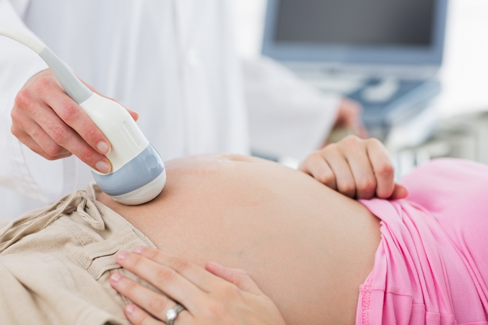
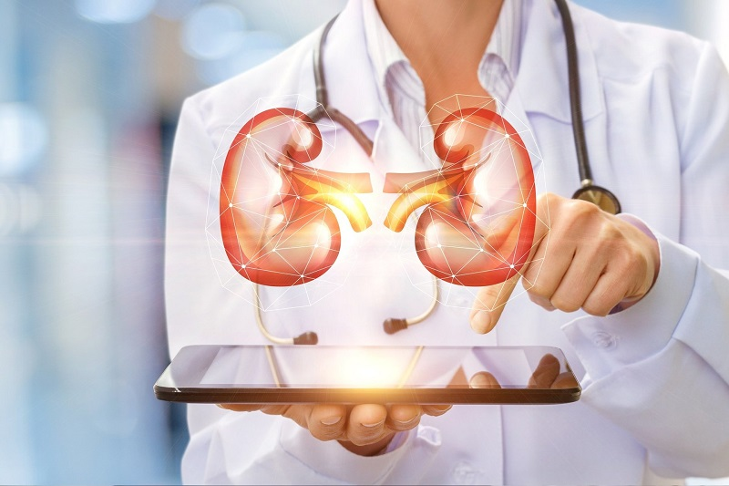

Cirurgia
Cirurgia
Cirurgia Geral
Procedimentos eletivos e pequenas cirurgias com total segurança, pré e pós-operatório acolhedor e infraestrutura moderna.
Fundada em 1995 pelos doutores Cadmo Silton, Gerardo Cristino e José Gerardo. Oferecemos consultas especializadas, cirurgias e exames de ponta para proporcionar mais saúde e qualidade de vida para você e sua família.
Desde a recepção ao pós-atendimento, nossa estrutura é pensada para acolher cada paciente com carinho, rapidez e precisão diagnóstica.
Mais de 20 profissionais incluindo médicos cirurgiões, cardiologistas, psicólogos clínicos e odontologistas de renome em Sobral.
Realize ultrassonografia, endoscopia, MAPA, Holter e ECG no mesmo local com agilidade na entrega de laudos.
Atendimento facilitado via UNIMED, HAPVIDA, PAS (Plano São Camilo) e condições acessíveis para atendimentos particulares.
Ponto nobre no Centro de Sobral na Av. Dom José, 800, com fácil acesso para transporte, estacionamento e comodidade.
Cuidado integral em diversas etapas da vida com médicos especialistas habilitados e infraestrutura clínica completa.
Procedimentos eletivos e pequenas cirurgias com total segurança, pré e pós-operatório acolhedor e infraestrutura moderna.
Avaliação completa da saúde cardiovascular, prevenção de riscos coronarianos, ECG e acompanhamento contínuo de hipertensão.

Diagnóstico por imagem de alta precisão: ultrassom abdominal, tireoide, obstétrico, vias urinárias e transvaginal com laudo ágil.
Exame seguro sob sedação monitorada para diagnóstico preciso de refluxo, gastrites, úlceras e pesquisa de H. pylori.

Prevenção e tratamento de cálculos renais, próstata, saúde do trato urinário masculino e feminino com privacidade e respeito.
Avaliação de saúde ocupacional, exames admissionais, demissionais, periódicos e laudos em conformidade com as normas.

Mesmo prédio, constante evolução
Fundada em 1995 pelos doutores Cadmo Silton, Dr. Gerardo Cristino e Dr. José Gerardo, o São Lucas Medical Center sempre funcionou no mesmo prédio tradicional no Centro de Sobral.
Hoje contamos com uma estrutura sólida composta por 12 colaboradores, 10 médicos especialistas, 6 psicólogos e 4 dentistas, unindo experiência clínica com acolhimento humano para cada paciente.
Trabalhamos com as principais operadoras de saúde do Ceará, além de oferecermos valores acessíveis para consultas e exames particulares.


Reunimos as respostas para as principais dúvidas de nossos pacientes sobre agendamento, convênios e exames.
Você pode agendar sua consulta diretamente pelos nossos telefones (88) 3677-2300 e (88) 3677-2315, ou de forma rápida pelo nosso WhatsApp clicando no botão "Agendar Consulta" no topo do site.
O São Lucas Medical Center funciona de segunda a sexta-feira, das 06:00 às 20:00. Atendemos com agendamento prévio e horários flexíveis para você conciliar com sua rotina de trabalho.
Aceitamos os convênios UNIMED, HAPVIDA, PAS (Plano São Camilo) e outras operadoras regionais. Para consultar a cobertura de um exame ou procedimento específico pelo seu plano, consulte nossa recepção.
Alguns exames (como Endoscopia Digestiva Alta e certas Ultrassonografias) necessitam de jejum ou preparo prévio. Ao agendar seu procedimento, nossa equipe orienta todos os passos necessários com clareza.
Estamos localizados na Av. Dom José, 800 - Centro, Sobral - CE, a poucos passos da tradicional Praça São João, em região de fácil acesso com transporte e comércio local.
Localização central de fácil acesso na principal avenida de Sobral, próximo à Praça São João.
Av. Dom José, 800 - Centro, Sobral - CE, 62010-290
Ponto de Referência: Próximo à Praça São João
Segunda a Sexta-feira: 06:00 às 20:00
(88) 3677-2300 • (88) 3677-2315